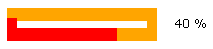

examples
examples$Date$
 Introduction
IntroductionThis example requires :
This example will run a polygonal (rectangle 15x3) ProgressBar filled in reverse way.
Cell coordinates are pre-computed (line 27) but free x-y-grid coordinates are also possible. Percent text info is right aligned on a white background area of 50 pixels width, at right side of polygonal shape (default).
[Top]
 Render options
Render options active-color = red inactive-color = orange width = 10 height = 10
[Top]
 Output
Output
[Top]
 PHP source syntax highlight
PHP source syntax highlight[Top]
 Play demo
Play demoRun the script.